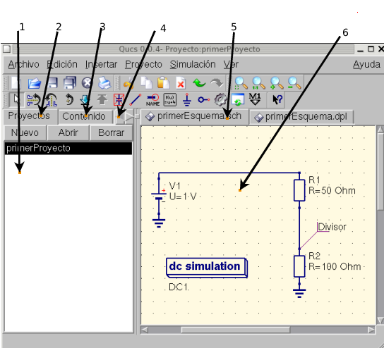

- Qucs -
Quite Universal Circuit Simulator
Empezando por el principio
Qucs (se pronuncia en inglés: kju:ks) es un simulador de
circuitos con un interfaz gráfico para el usuario. Es capaz de
llevar a cabo muchos tipos diferentes de simulación (p.
ej. con parámetros de continua). Este documento le
dará una breve descripción para saber como usar Qucs.
La primera vez que arranca Qucs, crea el directorio ".qucs" dentro de
su directorio home. Todos los archivos se graban en este directorio o
en alguno de sus subdirectorios. Después de que se haya cargado
Qucs, verá la ventana principal con un aspecto similar al de la
figura 1. En el lado derecho hay un área de trabajo (6) que
contiene los esquemas, visores de datos, etc. Si usa las
pestañas (5) sobre ese área, puede cambiar con rapidez
entre los documentos que estén abiertos. A la izquierda de la
ventana principal de Qucs hay otro área (1), cuyo
contenido depende de la selección de las pestañas que se
encuentran en su parte superior:
"Proyectos" (2), "Contenido" (3) y "Componentes" (4). Después de
ejecutar Qucs, la pestaña de "Proyectos"
(2) se activa. Si es la primera vez que arranca este programa, este
área está vacía porque no tiene ningún
proyecto. Pulse el botón "Nuevo" que está encima de este
área (1) para que se abra un diálogo. Escriba el nombre
de su primer proyecto, p. ej. "primerProyecto" y pulse el botón
"Crear". Qucs crea un directorio de proyecto dentro del directorio
~/.qucs, para este ejemplo se llamará "primerProyecto_prj"".
Todos los archivos que pertenezcan a este nuevo proyecto se
guardarán dentro de este directorio. El proyecto nuevo se abre
inmediatamente (como se puede ver en la barra del título de la
ventana) y las pestañas cambian a la posición de
"Contenido" (3), en la que se muestra en contenido del proyecto
abierto. Aún no tiene ningún documento, así que
pulse guardar en la barra de herramientas (o use menú principal:
Archivo ->Guardar) para guardar el documento sin título que
ocupa el área de trabajo (6). Se le pedirá el nombre del
nuevo documento. Escriba "primerEsquema" y pulse el botón
"Guardar".

Figura 1 - Ventana principal de Qucs
Ahora queremos hacer una simulación simple de corriente
continua, es decir, queremos analizar el circuito de la figura
(1). Active la pestaña "Componentes" ( (4) en la figura
1). Ahí vera una caja desplegable donde puede escojer un
grupo de componentes, y debajo, los componentes del grupo seleccionado.
Escoja "componentes sueltos" y pulse en el primer símbolo:
"Resistencia". Si mueve el cursor del ratón al área de
trabajo (6) llevará el dibujo del símbolo de una
resistencia. Al pulsar el botón derecho del ratón rota el
símbolo, al pulsar el botón izquierdo coloca el
componente en el esquema. Repita este proceso para todos los compnentes
tal y como muestra la figura 1. Las fuentes de tensión
están el la pestaña de "fuentes", el símbolo de
tierra se puede tomar de "componentes sueltos" o desde la barra de
herramientas, la simulación que queremos está definida en
los bloques grandes de simulación que están en la
pestaña "simulaciones". Para editar los parámetros de la
segunda resistencia, haga doble clic sobre ella. Aparece un
diálogo en el que puede cambiar la resistencia. Escriba "100
Ohm" en el campo de edición que está en el lado derecho y
pulse intro.
Para conectar los componentes, pulse el botón cablear de la
barra de herramientas (o use el menú principal: Insertar
->Cable).
Mueva el cursor sobre una conexión abierta (marcada por
pequeños círculos rojos). Haciendo clic en ella comienza
el cable. Ahora muévase al punto final y haga clic otra vez. Los
componentes están conectados así. SI desea cambiar la
dirección de la esquina del cable, haga clic con el botón
derecho del ratón antes de fijar el punto final. También
se puede finalizar un cable sin pulsar en una conexión abierta o
en un cable: Simplemente haga doble clic con el botón izquierdo
del ratón.
Finalmente, debe etiquetar el nodo en el que quiera que Qucs calcule la
tensión. Pulse en el botón etiqueta de la barra de
herramientas (o use el menú: Insertar ->Etiqueta de Cable).
Ahora haga clic en el cable deseado. Se abrirá un diálogo
para que pueda escribir el nombre del nodo. Escriba "divisor" y haga
clic en el botón "Aceptar". Ahora el circuito debería
parecerse al de la Figura 1.
Para comenzar la simulación pulse el botón simular de la
barra de herramientas (o use el menú: Simulación ->
Simular) Se abrirá una ventana que muestra el progreso. Cuando
acabe con éxito la simulación se abrirá la
pantalla de datos. Normalmente, esto ocurre tan rápido que
sólo verá un pequeño parpadeo. Ahora tiene que
colocar un diagrama para ver los resultados de la simulación. En
la parte izquierda se habrá seleccionado automáticamente
la pestaña de "diagramas" en los componentes. Pulse el elemento
"Tabular", muévalo al área de trabajo y
colóquelo pulsando el botón izquierdo del ratón.
Debe abrirse un diálogo en el que puede escojer lo que el nuevo
diagrama va a mostrar. En la zona de la izquierda verá el nodo
que ha definido: "divisor". Haga doble clic en él y se
transferirá a la zona de la derecha. Salga del
diálogo pulsando el botón "Aceptar". Ahora debería
ver el resultado de la simulación: 0.666667 voltios.
Maravilloso, ¡Dése una palmadita en la espalda!
Volver al principio